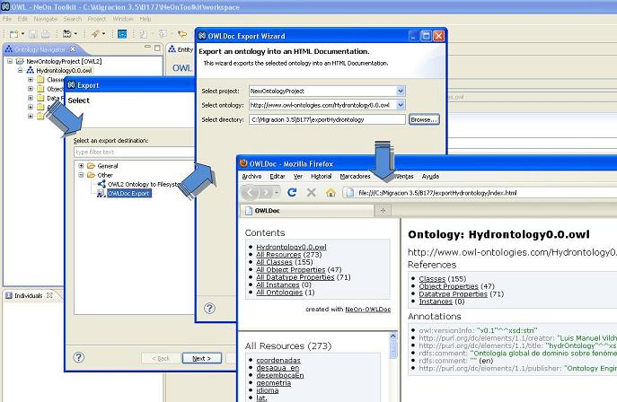

The OWLDoc plug-in adds to the NeOn Toolkit an option to export an OWL ontology as an HTML Documentation.
This plug-in uses the OWL API to extract the information from the OWL Ontology and creates an output that contains an organized set of HTML files that provide the documentation about the ontology and all its resources.
